수처리 공정
수처리 공정은 하천이나 바다의 오염물질을 제거하는 공정이다.
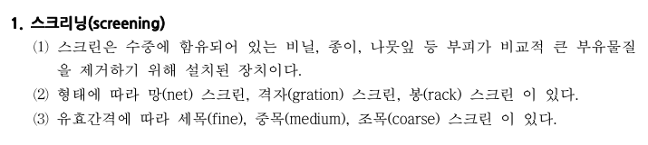
먼저 스크리닝은 수중에 떠있는 부유물질을 제거하기 위한 장치인 스크린을 이용해 물질을 걸러내는 것이다.
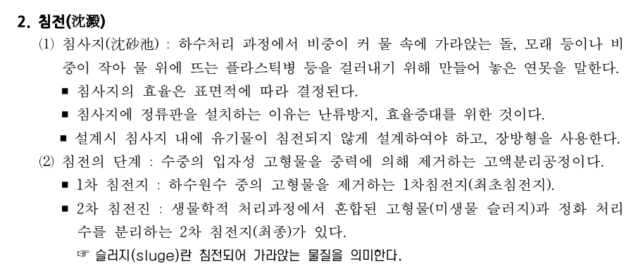
침전은 가라앉은 것들을 걸러내는 것이다.
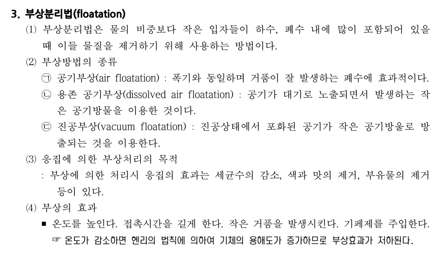
부상분리법은 물위에 뜨는 것을 그냥 분리하는 것이다.
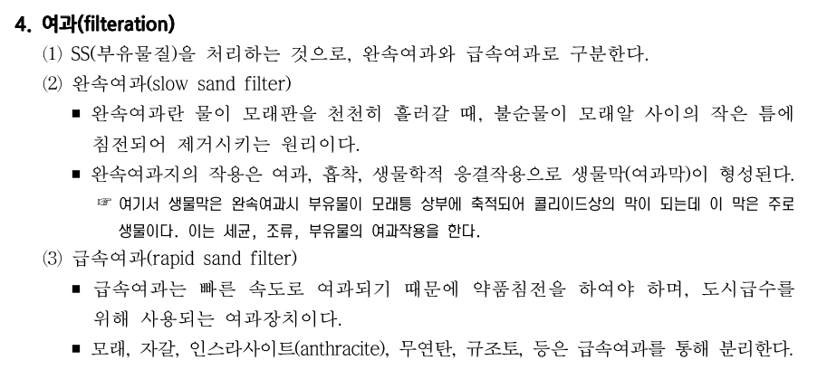
여과는 물에 있는 물질을 필터링하여 걸러내는 것이다.
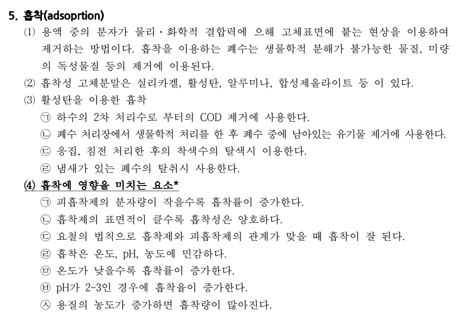
흡착은 활성탄에 물체를 붙이게 하여 제거하는 방법이다.
이번엔 물질이 아닌 생물학적 처리를 살펴보겠다.
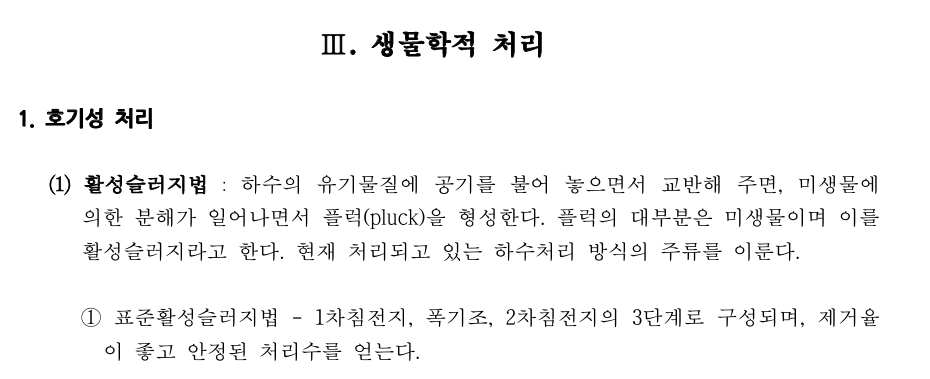
하수에 유기물질이 있을 경우, 미생물을 이용하여 분해시키는 것을 호기성 처리라고 한다. 폐수는 물+오염물질인데, 이 오염물질에는 유기물질이 많다. 이걸 미생물의 먹이로 주는 것이다. 이때 미생물의 종류에 따라 산소가 필요한 호기성 미생물이 있고, 산소를 필요로 하지 않는 혐기성 미생물이 있다. 혐기성은 분해시 냄새가 난다. 만약 용존산소량 DO가 줄어들면 혐기성 미생물이 늘어나면서 악취가 나므로, 산소를 계속 공급해야한다. 이를 폭기라고 한다.
활성슬러지법은 슬러지(미생물 덩어리)를 공기와 함께 교반시키는 것으로, 폭기조와 침전지가 있으면 활성슬러지법이다.
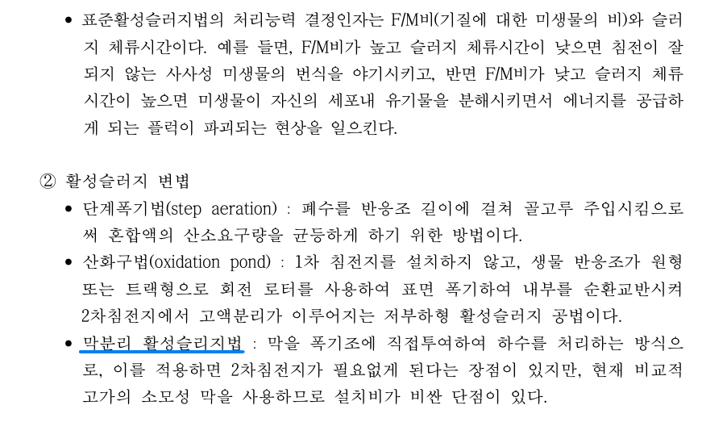
막분리 활성슬러지법이라고, 2차침전지 대신 막을 쓰는 고비용 슬러지법이 존재한다.
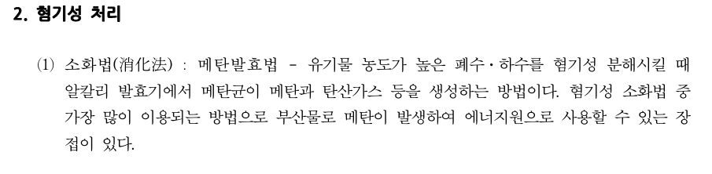
혐기성 처리는 잘 안쓴다. 악취가 나기 때문이다. 유기물 농도가 매우 높을 경우에만 혐기성을 쓴다.
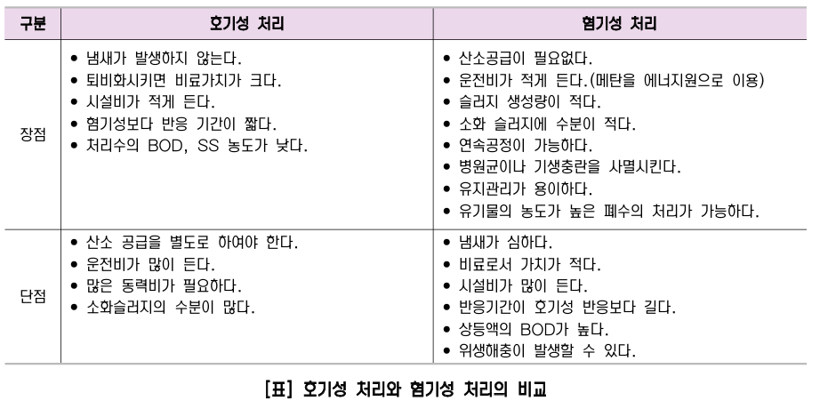
이제 미생물 처리를 마치고 화학적 처리를 살펴보겠다.
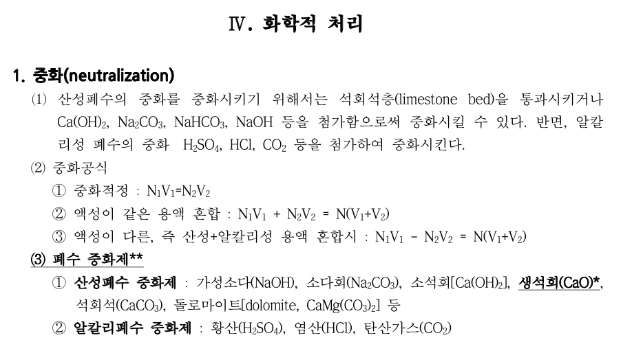
중화는 그냥 폐수가 산성이나 염기를 띨 때 중화시켜주는 것이다.
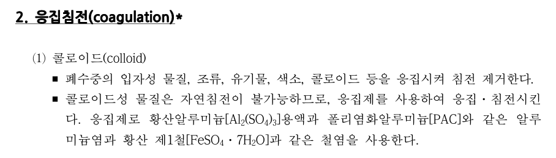
액체속에 콜로이드가 많은데, 황산알루미늄을 넣으면 이것이 응집되어 뭉치므로 처리하기 쉽다.,
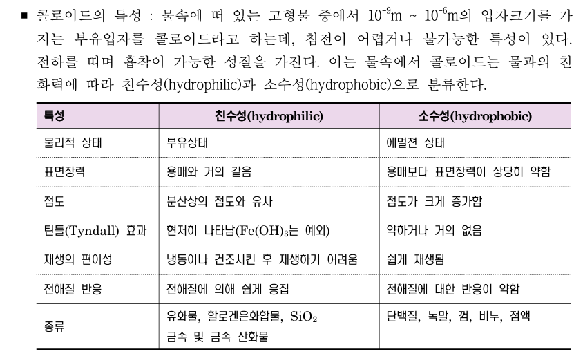 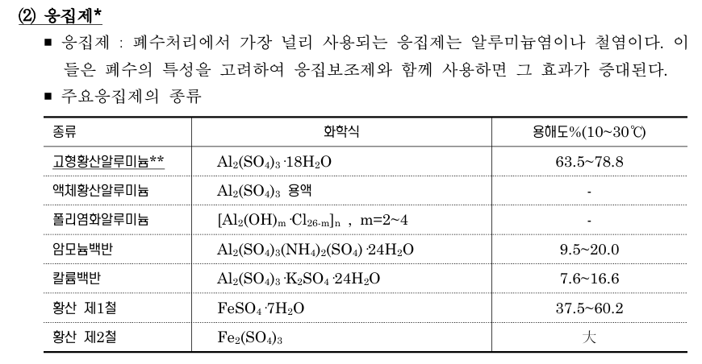
황산알루미늄, 백반, 황산, 알루미늄 등이 응집제이다.
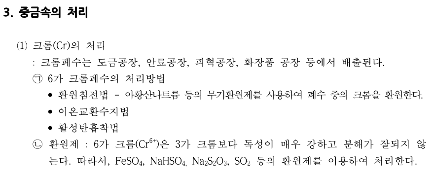
중금속 중에서 크롬은 6가일 경우 매우 위험하다. 이걸 3가로 환원시켜서 6가크롬을 처리한다. 또는 흡착을 시킬 수도 있다.
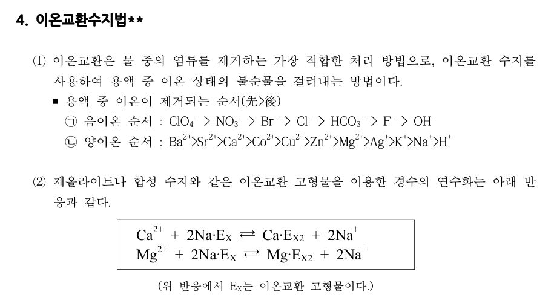
이온이 있을때, 안정한 수지를 넣어 이온+수지를 만들고 다른 이온으로 교환하는 것이다.
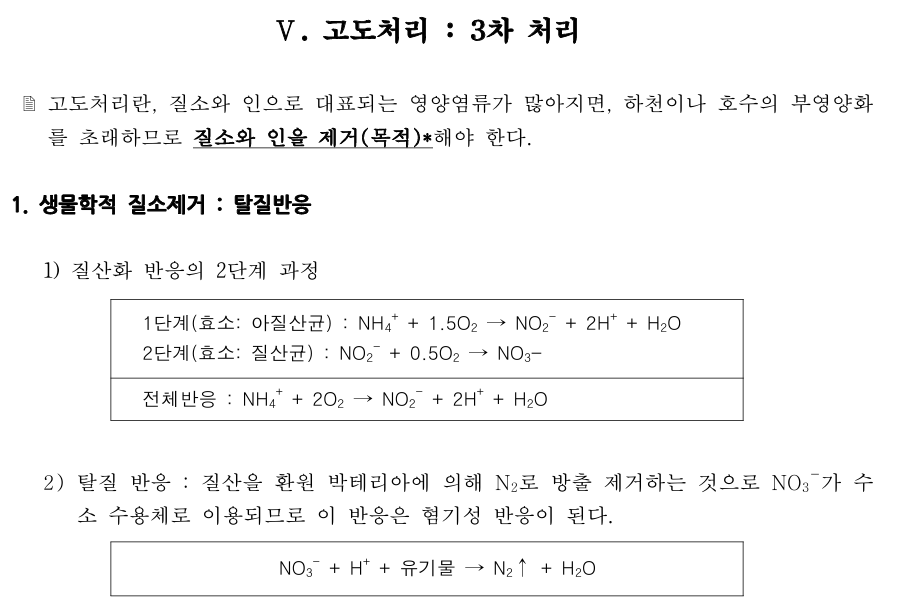
고도처리는 질소와 인을 제거하는 것이다.그 중 탈질처리는 질소를 제거하는 것이다.
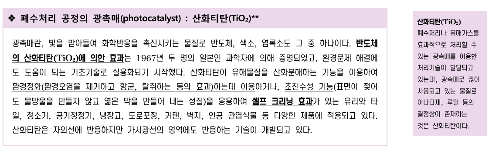
폐수처리의 광촉매로 산화티탄이 쓰인다.